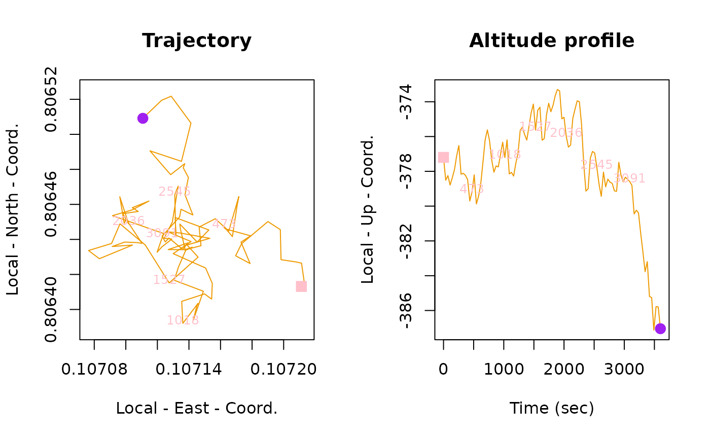
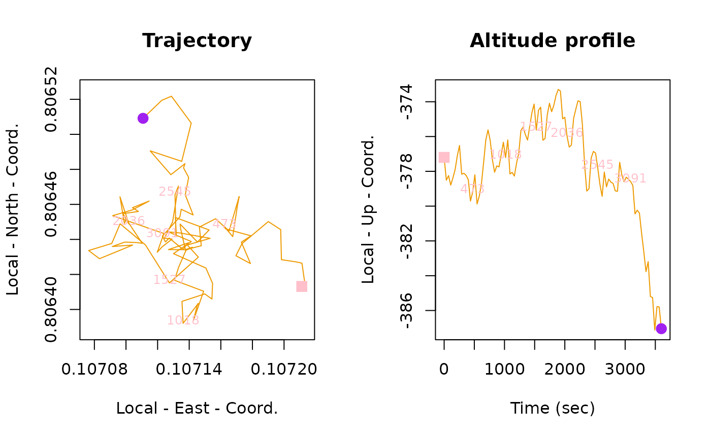
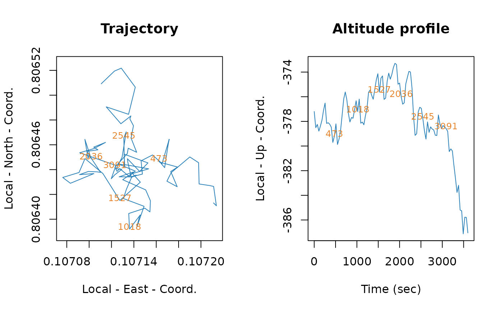
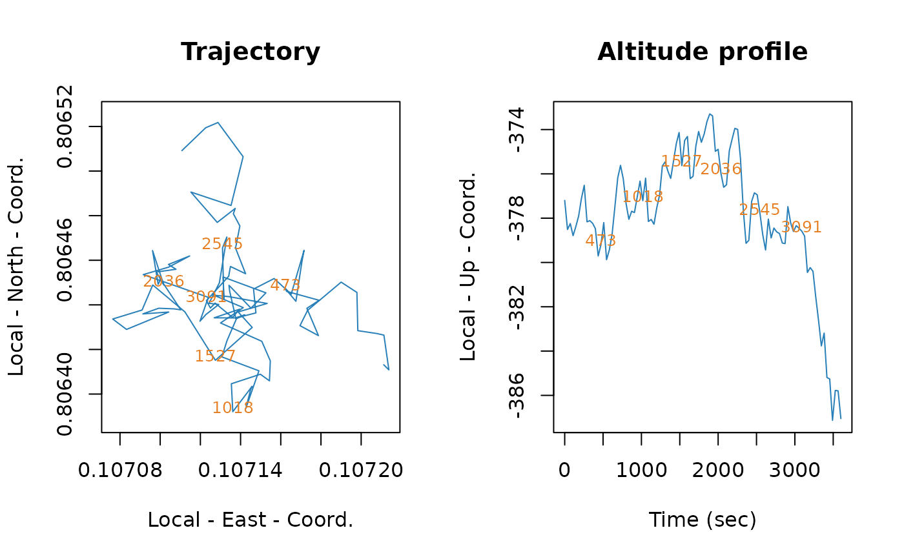

Plot a trajectory object in 2D or 3D.
# S3 method for trajectory
plot(
x,
threeD = FALSE,
col = "#2980b9",
col_start = "#e67e22",
col_end = "#e67e22",
pch_points_start = 15,
pch_points_end = 16,
cex_points = 1.5,
add_altitude = TRUE,
n_split = 6,
plot_end_points = TRUE,
add_title = TRUE,
threeD_line_width = 4,
threeD_line_color = "#008080",
threeD_col_grad = FALSE,
threeD_grad_start = "#008080",
threeD_grad_end = "#ab53cf",
...
)Arguments
- x
A
trajectoryobject- threeD
A
booleanindicating whether the plot should be 3D or 2D (defaultFALSE, 2D).- col
A
stringcorresponding to the color of the line used for 2D trajectory (default"blue4").- col_start
A
stringcorresponding to the color of the point used to denote the beginning of a 2D trajectory (default"green3").- col_end
A
stringcorresponding to the color of the point used to denote the end of a 2D trajectory (default"red2").- pch_points_start
A
numericcorresponding to the symbol (pch) of the points used to denote the beginning of a 2D trajectory (default15).- pch_points_end
A
numericcorresponding to the symbol (pch) of the points used to denote the end of a 2D trajectory (default16).- cex_points
A
numericcorresponding to the size (cex) of the points used to denote the beginning and the end of a 2D trajectory (default1.5).- add_altitude
A
booleanto indicate if the altitude should be plotted in 2D trajectory in NED system (defaultTRUE; altitude is plotted).- n_split
A
numericfor the number of ticks in 2D plot with altitude profile, if NULL no ticks are added (default =6).- plot_end_points
A
booleanto indicate if points should be plotted at the beginning and the end of a 2D trajectory (defaultTRUE; points are plotted).- add_title
A
booleanorstring. If abooleanis used it indicates if a title should be added to 2D trajectory (only active if name of trajectory exist); if astringis used it corresponds to the title (defaultTRUE).- threeD_line_width
A
numericcorresponding to the width of the line for a 3D trajectory (default4).- threeD_line_color
A
stringcorresponding to the hex color code of the line used for a 3D trajectory (default"#008080").- threeD_col_grad
A
booleanto indicate if a color gradient should be used for a 3D trajectory (defaultFALSE).- threeD_grad_start
A
stringcorresponding to the hex color code for the start of the gradient (default"#008080").- threeD_grad_end
A
stringcorresponding to the hex color code for the end of the gradient (default"#ab53cf").- ...
Additional arguments affecting the plot produced.
Value
A trajectory plot.
Examples
n <- 100
set.seed(123)
dat <- cbind(
seq(from = 0, to = 60 * 60, length.out = n),
46.204391 * pi / 180 + cumsum(rnorm(n)) / 10^5,
6.143158 * pi / 180 + cumsum(rnorm(n)) / 10^5,
375 + cumsum(rnorm(n))
)
traj <- make_trajectory(data = dat, name = "My cool data")
plot(traj)
plot(traj, threeD = TRUE)
plot(traj,
threeD = TRUE, threeD_line_width = 8,
threeD_line_color = "#e74c3c"
)
plot(traj,
threeD = TRUE,
threeD_col_grad = TRUE
)
plot(traj,
threeD = TRUE, threeD_col_grad = TRUE,
threeD_grad_start = "#e74c3c",
threeD_grad_end = "#d68910"
)
traj <- make_trajectory(data = dat, name = "My cool data", system = "ned")
plot(traj)
 plot(traj, col = "orange2", col_start = "pink", col_end = "purple")

plot(traj, pch_points_start = 15, cex_points = 3)
plot(traj, col = "orange2", col_start = "pink", col_end = "purple")

plot(traj, pch_points_start = 15, cex_points = 3)
 plot(traj, plot_end_points = FALSE)

plot(traj, plot_end_points = FALSE, add_title = FALSE)
plot(traj, plot_end_points = FALSE)

plot(traj, plot_end_points = FALSE, add_title = FALSE)